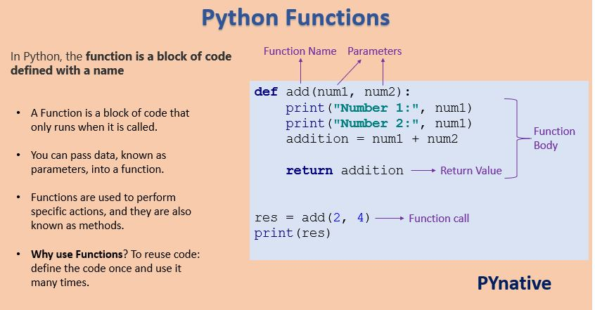

Functions#
You’re already familiar with the print(), input(), and len() functions from the previous chapters. Python provides several built-in functions like these, but you can also write your own functions. A function is like a mini-program within a program.
What is Function and Why we need it ?#

Function Definition#
a function is defined using the def keyword followed by the function name, parameter(s) (if any), and a colon : to start the function body. The function body contains the code that is executed when the function is called.
Syntax :
def function_name(parameter1, parameter2, ...):
# function body
statement1
statement2
...
To better understand how functions work, let’s create one.
def hello():
print('Hello!')
print('Hello!!!')
print('Hello there.')
hello() # Function call
Hello!
Hello!!!
Hello there.
hello()
hello()
hello()
Hello!
Hello!!!
Hello there.
Hello!
Hello!!!
Hello there.
Hello!
Hello!!!
Hello there.
The hello() are function calls. In code, a function call is just the function’s name followed by parentheses, possibly with some number of arguments in between the parentheses. When the program execution reaches these calls, it will jump to the top line in the function and begin executing the code there. When it reaches the end of the function, the execution returns to the line that called the function and continues moving through the code as before.
A major purpose of functions is to group code that gets executed multiple times. Without a function defined, you would have to copy and paste this code each time, and the program would look like this:
print('Hello!')
print('Hello!!!')
print('Hello there.')
print('Hello!')
print('Hello!!!')
print('Hello there.')
print('Hello!')
print('Hello!!!')
print('Hello there.')
Hello!
Hello!!!
Hello there.
Hello!
Hello!!!
Hello there.
Hello!
Hello!!!
Hello there.
def statement with parameters#
When you call the print() or len() function, you pass in values, called arguments in this context, by typing them between the parentheses. You can also define your own functions that accept arguments.
def hello(name):
print('Hello '+ name)
The definition of the hello() function in this program has a parameter called name. A parameter is a variable that an argument is stored in when a function is called.
hello('George')
hello('Esra')
Hello George
Hello Esra
One special thing to note about parameters is that the value stored in a parameter is forgotten when the function returns. For example, if you added print(name) after hello(‘Esra’) in the previous program, the program would give you a NameError because there is no variable named name. This variable was destroyed after the function call hello(‘Esra’) had returned, so print(name) would refer to a name variable that does not exist.
Variable Scope and Lifetime#
The scope of a variable refers to the part of the program where the variable is visible and can be accessed. It can be divided into two types:
1 . Local Scope:#
Variables declared inside a function have local scope. They are only accessible inside the function and are destroyed when the function completes execution.
2 . Global Scope:#
Variables declared outside any function or block have global scope. They are accessible from anywhere in the program, and their lifetime is until the program ends.
Note
**Variable Lifetime:**
The lifetime of a variable is the duration for which it exists in the memory.
Local and Global Variable#
1 . Local Variable :
Local variables have a local scope, meaning they are only accessible within the block of code in which they are defined. This block of code can be a function, a loop, or any other construct that defines a scope.
def my_func():
x = 10 # local variable
print("Inside my_func(), x =", x)
my_func()
print("Outside my_func(), x =", x) # This will give an error as x is not defined outside the function
Inside my_func(), x = 10
Outside my_func(), x = None
2 . Global Variable :
Global variables, on the other hand, have a global scope, meaning they can be accessed from anywhere in the program.
global_var = 20 # global variable
def my_func():
local_var = 10 # local variable
print("Inside my_func(), global_var =", global_var) # Accessing global variable
print("Inside my_func(), local_var =", local_var)
my_func()
print("Outside my_func(), global_var =", global_var)
Inside my_func(), global_var = 20
Inside my_func(), local_var = 10
Outside my_func(), global_var = 20
return statement#
When you call the len() function and pass it an argument such as ‘Hello’, the function call evaluates to the integer value 5, which is the length of the string you passed it. In general, the value that a function call evaluates to is called the return value of the function.
When creating a function using the def statement, you can specify what the return value should be with a return statement. A return statement consists of the following:
The return keyword
The value or expression that the function should return
When an expression is used with a return statement, the return value is what this expression evaluates to. For example, the following program defines a function that returns a different string depending on what number it is passed as an argument.
For example:
def areaCircle(r):
PI=3.14
result=PI*r*r
print('The area of circle ')
return result
x=areaCircle(5)
x
The area of circle
78.5
you can do further operation on this x variable as it contains actual value of area of circle
def areaCircle(r):
PI=3.14
result=PI*r*r
print('The area of circle ')
return result
x=areaCircle(5)
print(x + 1)
The area of circle
79.5
Difference between print and return
print() displays the values from the function so our x is empty and thus contains None
def areaCircle(r):
PI=3.14
result=PI*r*r
print('The area of circle ')
print(result)
x=areaCircle(5)
print(x)
The area of circle
78.5
None
so if you try to do any operations on x it leads to TypeError here
def areaCircle(r):
PI=3.14
result=PI*r*r
print('The area of circle ')
print(result)
x=areaCircle(5)
print(x + 1)
The area of circle
78.5
---------------------------------------------------------------------------
TypeError Traceback (most recent call last)
<ipython-input-18-7d4aa0dab2f3> in <module>
5 print(result)
6 x=areaCircle(5)
----> 7 print(x + 1)
TypeError: unsupported operand type(s) for +: 'NoneType' and 'int'
Defining Functions with Additional Features#
1 . Required Arguments :
A required argument is an argument that must be provided to a function when it is called. A function that expects a required argument will raise a TypeError if the argument is not provided.
Here’s an example of a function with a required argument:
def greet(name):
print("Hello", name)
greet("Alice")
Hello Alice
If you don’t provide a name argument, you’ll get a TypeError:
greet()
---------------------------------------------------------------------------
TypeError Traceback (most recent call last)
<ipython-input-3-db845682bfe7> in <cell line: 1>()
----> 1 greet()
TypeError: greet() missing 1 required positional argument: 'name'
2 . Default arguments:
You can make arguments optional for a function by using default arguments in the given code below greeting is default argument so even if you don’t provide value to it, you won’t get any error
def greet(name, greeting="Hello"):
print(greeting, name)
greet("Alice")
greet("Bob", "Hi")
Hello Alice
Hi Bob
Introduction to Modules and Packages in Python :
In Python, a module is a file that contains Python code (functions), and a package is a directory that contains one or more modules. Modules and packages help in organizing code and make it more reusable.
Refer this link : https://realpython.com/python-modules-packages/
Practice Questions#
Q. Create a function to calculate the cube of a number that is passed as the argument to the function.
Example :
def cube(number):
### your code here
number = 4
cube(number)
64
Q. Create a function to add two numbers.
Example :
def function_name(num1,num2):
### your code here
function_name(3, 5)
8
Q. Create a function that checks if a number is even.
Example :
def function_name(num):
### your code here
function_name(4)
Even
Q. Write a function that returns the length of a string.
Example :
def function_name(string):
### your code here
function_name(‘Hello’)
5
Q. Write a function that reverses a string.
Example :
def function_name(string):
### your code here
function_name(‘hello’)
“olleh”
Q. Create a function that displays first 2 values in a list.
Example :
def function_name(list1):
### your code here
function_name([1, 3, 2])
1 3
Q. Write a function that concatenates two strings.
Example :
def function_name(val1,val2):
### your code here
function_name(“Hello”, “World”)
“HelloWorld”
Q. Create a function that converts a temperature from Celsius to Fahrenheit.
Hint: Use the formula F = C * 9/5 + 32.
Example :
def function_name(num1):
### your code here
function_name(0)
32.0